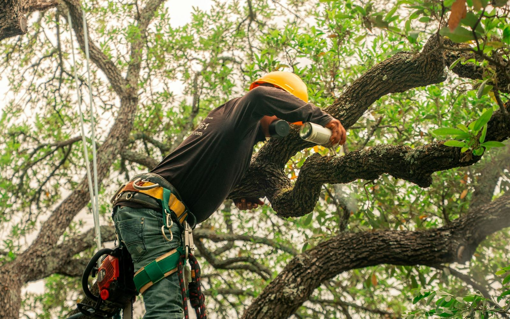

Tree trimming and pruning in Cedar Hollow to keep big trees healthy and out of the way. Overgrown limbs get cut back from roofs, gutters, driveways and walkways, and dead wood comes out before it falls on its own. Thinning the crown lets more light into the yard and takes weight off heavy limbs. Pruning is done with clean cuts in the right spot so the tree can heal. Every limb that comes down gets cleaned up and hauled away.
What's included
Roof and gutter clearance
Limbs cut back from the house.
Dead wood removal
Dead limbs taken out before they fall.
Crown thinning
A lighter canopy and more light to the yard.
Raising the canopy
Low limbs removed over driveways and walkways.
Shaping and pruning
Clean cuts that keep the tree healthy.
Cleanup
Every limb cleaned up and hauled off.